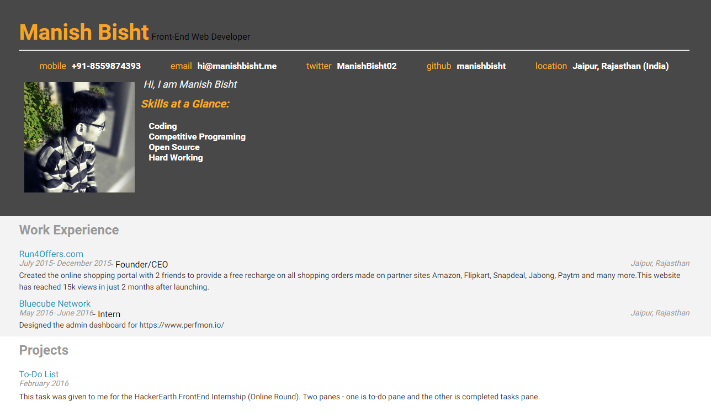

Using jQuery, developed an interactive resume application that reads all data from a JSON file and then dynamically modifies the DOM to display the information. Further customized the project by personalizing the design using CSS.
- Nanodegree Project
